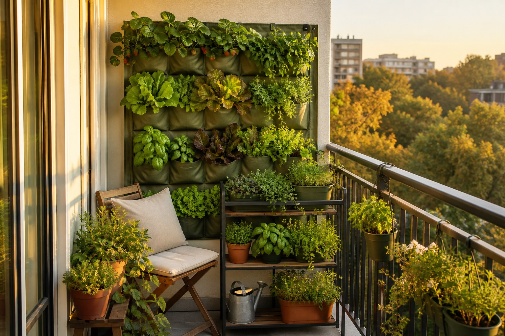
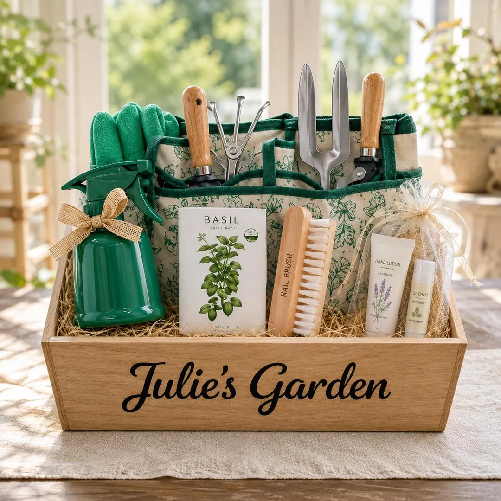

UrbanSprout is a small, honest shop for people who grow food in small places — seed kits, planters and tools for balconies, windowsills and stairwells, plus a blog about doing it all a little smarter.
Browse the catalogue Read the blog
“The best tomato in the city is the one on your own balcony.”
| Page | What's on it | Open |
|---|---|---|
| Products | Our full catalogue: eight products, each showing the original price and the discounted price side by side, with a "View Details" reveal and a demo cart you can check out from. | Browse products → |
| Blog | Five short, honest articles on technology in urban gardening — what it helps with in daily life and in business, where it hurts, and how it makes city growing more sustainable. | Read the blog → |
| Research | The five real gardening and e-commerce websites studied before building UrbanSprout — what we share, where we differ, and what was improved each time. | See the research → |
| About Us | The one-member team behind the store, a portfolio of skills and studies, and a feedback form validated by plain JavaScript. | Meet the team → |

Five foolproof vegetable seed packets, coco-peat discs and a sowing guide written for absolute beginners — the kit I would hand to anyone who claims to have a "brown thumb".
NPR1,499 NPR1,199 Save NPR300
See it in the catalogue